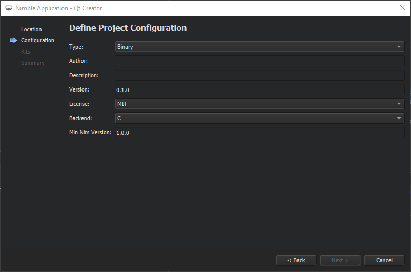

Create Nimble projects
To use a wizard to create boilerplate files for a Nim package that you manage with Nimble:
- Select File > New Project > Non-Qt Project > Nimble Application.
- Specify the name and location of the application.
- Select Next.
- Specify information about your application package.

- Select Next to select a kit that contains the Nim compiler.
- Select Next to create the project.
See also Add Nim compilers, Enable and disable plugins, Nim, and Nimble.